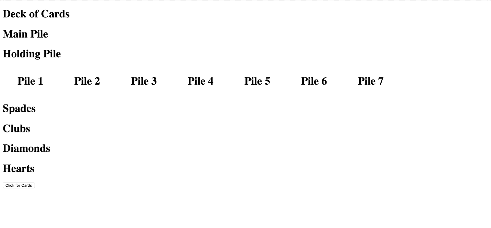

Staring off, we get the cards from the api

Let's make some holding pens for these cards

The cards need to go into their own little pens though and not all crowd in the main deck
Lets make it look a little more like solitiare
Alas, you cannot see the cards before you've used them, this is not solitaire! Fortunately for us, vue has easy html integration so one if statement later and...

Because it's 2018
Currently, the document is only checking to see if it is the last card to show it, but we'll get to that later. First we actually have to add the dreaded drag and drop. Which is probably going to be the hardest part of this entire project.

We can now drag and drop the cards. As of now, this was actually one of the hardest things I've had to overcome in the creation of this app. So many different vue drag and drop add-ons and plug-ins have been killed and used by me. I've dabbled in vue-cli and npm but in the end, I only wanted to create a lightweight app and the simplest solution was just to use the HTML default drag and drop API along with Vue. This problem took me around 4 days to actually tackle.
Smoke and mirrors though, this function only gets rid of a card in the first pile and places it in the second. It's what will impress the project managers though.
Now, this is the real shit.

Unfortunately, the divs for dropping are reduced to nothing so you cannot drop a card into an empty div so lets just make the height a little higher in css

Wew lad, the drop divs are a good size now, but the main div is lacking

Now we're gucci af.
I guess now we actually have to focus on actually doing the active cards instead of cheesing it with the last element in the array, so lets get this. Just need to change an if statement right?
<div v-if="index==cards.length-1">
<card-item @dragstart.native = "on_drag_start" :card_img="card.img" :card_id="card.code"></card-item>
</div>
<div v-else>
<img draggable = "false" src="images/bowsette.jpg"></img>
</div>
to
<div v-if="card.active==true">
<card-item @dragstart.native = "on_drag_start" :card_img="card.img" :card_id="card.code"></card-item>
</div>
<div v-else>
<img draggable = "false" src="images/bowsette.jpg"></img>
</div>
Should work right? ...... r i g h t?

Well, it actually did work, I'm amazed
As you can see though, it doesn't actually reveal the card or makes them active so lets do that. Adding to our remove card from pile function making the last item in the array active.
if(pile_2.cards.length>0){
pile_2.cards[(pile_1.cards.length)-1].active=true;
}
Add this to our code and hopefully it works on pile 2

Holy it does, today has been a world of wonder for me folks.
But, does it work for the other piles?

Man, today has just been a great day for me, first try for everything, usually this doesn't happen
Lemme take a break here to tell you about my environment for todays session. Starbucks with a cup of chai tea which I have refilled twice already with free hot water.
There is a girl right next to me making me nervous but I'll survive this for right now
Reading a quick book and I'll get back to it